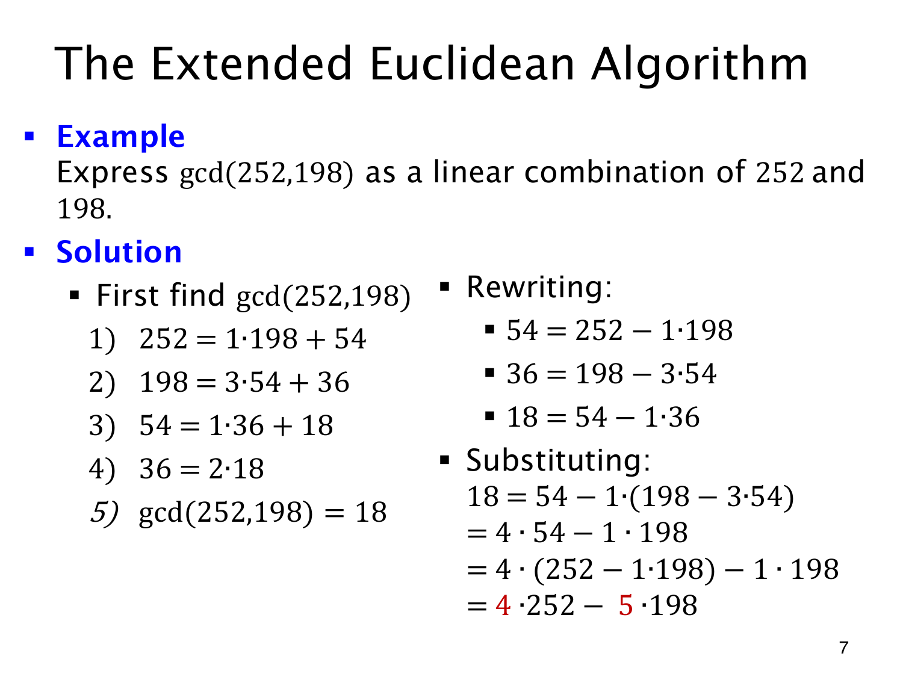

L1.13 · 第 7 页讲解原文
查看这一页课件

求出 GCD 后，再把余数代回去
扩展欧几里得算法要同时给出 GCD 和表达它的系数。对 252,198，先做普通的除法：
252=198+54,198=3⋅54+36,
54=36+18,36=2⋅18.
最后一个非零余数是 18，因此 gcd(252,198)=18。从产生 18 的式子开始回代：
18=54−36=54−(198−3⋅54)=4⋅54−198.
此时还含中间余数 54，继续用 54=252−198 替换：
18=4(252−198)−198=4⋅252−5⋅198.
所以一组 Bézout 系数为 s=4,t=−5，验算为 1008−990=18。
回代每次消去较晚出现的余数，直到只剩最初的 252,198，最终答案不能还留着 54,36。起点应是最后一个非零余数，不能从余数为零的末式误认 GCD 为零。